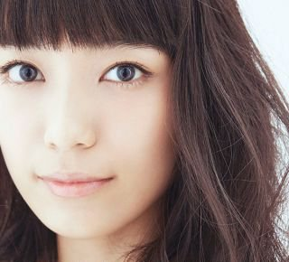

- 名前：
- ayaka（本名：小川 礼華）
- 生月日：
- １９８８年９月１９日
- 出身地：
- 岡山生まれの京都育ち
- 血液型：
- B型
- 身長：
- １６１cm
- 体重：
- CB400SFの重量の４分の１くらい
- 趣味：
- ゲーム、バイクの運転、カラオケ、資格取得、神社仏閣巡り
- 特技：
- パソコンにかじりつく、殺陣、LAMP環境でのアプリケーション開発（予定）
- 好きなアーティスト：
- Sound Horizon、Linked Horizon、miwa、いきものがかり
岡山県岡山市で生まれる。
岡山市立豊小学校 入学。
岡山市立豊小学校 入学。
岡山市立西大寺中学校 入学。
就実高等学校 普通科 入学。
将来の夢が声優になる。
就実高等学校 普通科 卒業。
大谷大学 文学部 人文情報学科 入学。
アミューズメントメディア総合学院 夜間クラス 入学。
大学内のアルバイト、情報教育アシスタントに就任。
「ハレルのながれぼし」プレア役を務める。
大谷大学 文学部 人文情報学科 メディアクリエーターコース 卒業。
基金訓練 基礎演習コース 基礎演習科 入所。
基金訓練 基礎演習コース 基礎演習科 修了。
基金訓練 実践演習コース WEBデザインスペシャリスト科 入所。
基金訓練 実践演習コース WEBデザインスペシャリスト科 修了。
貴布禰総本宮 貴船神社 入社。
株式会社 京都新聞社 入社。
貴布禰総本宮 貴船神社 退職。
株式会社 京都新聞社 退職。
求職者支援訓練 実践コース Webプログラム制作科 入所。
皆と楽しくプログラムの勉強をしている。